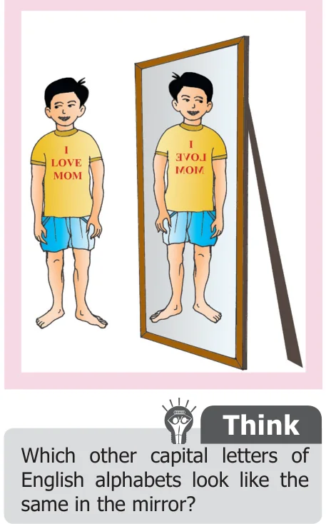
Standing in front of a mirror, Kumaran was getting ready to celebrate his birthday. He noticed a beautiful sentence I LOVE MOM written on his T-shirt which was presented by his uncle.
In these words, he saw I and MOM were looking the same in the mirror. But the word LOVE did not appear the same. It looked as ƎVO⅃.
Out of curiosity, he took out some alphabet cards and started checking which of the alphabets would look the same in the mirror. He found a few alphabets A, H and I look the same in the mirror, because they have lines of symmetry.
Already we know that a line of symmetry divides the figure into two equal halves. When you keep a mirror along the line of symmetry the other half of the figure gets reflected by the mirror and it looks the same. This is known as reflection symmetry or mirror symmetry.
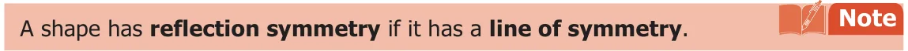
When an object is seen in a mirror, the image obtained on the other side of the mirror is called its reflection. The following figure shows the reflection of the English alphabet A. Let us assume that there is a line between A and its image in the place of a mirror.
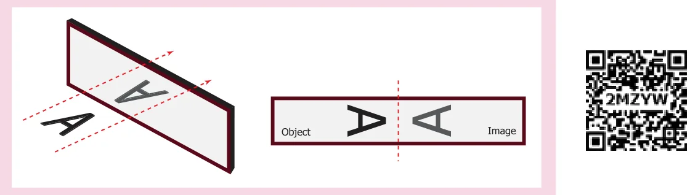
We observe that an object and its mirror image are symmetrical with reference to the mirror line. If the paper is folded, the mirror line becomes the line of symmetry.
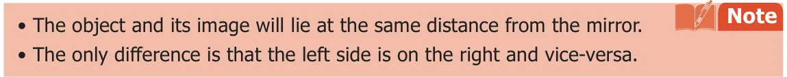
Example 5
Assuming one shape is the reflection of the other, draw the mirror line for each of the given figures.
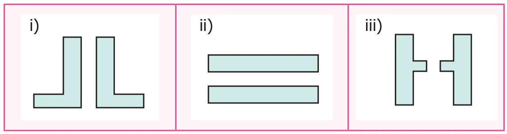
Solution
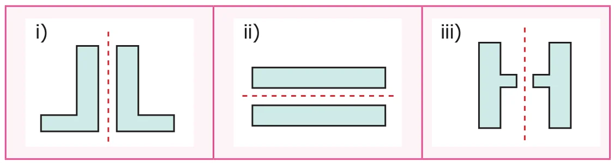
Example 6
Draw the reflection image of the following figures about the given line.
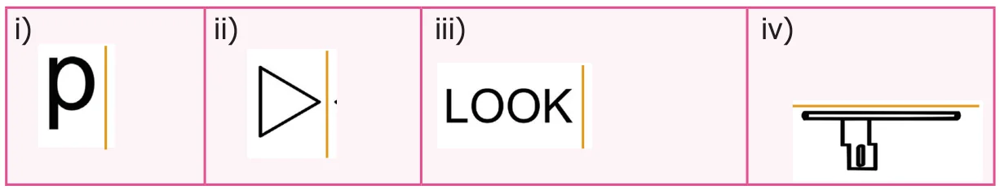
Solution
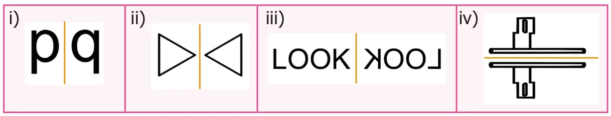
Example 7
What words will you see if a mirror is placed below the words MOM, COM, HIDE and WICK?
Solution
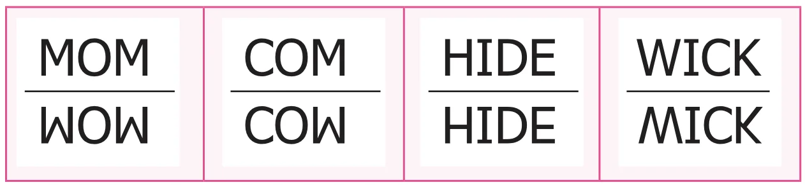
Example 8
Colour any one box in the given grid sheet so that it has reflection symmetry and draw the lines of symmetry.
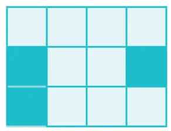
Solution
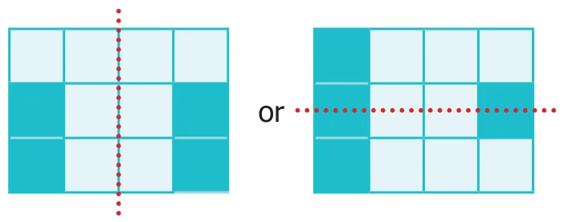
Example 9
In the given figure first reflect the shaded part about the line ‘\(l\)’ and then reflect it about the line ‘\(m\)’.
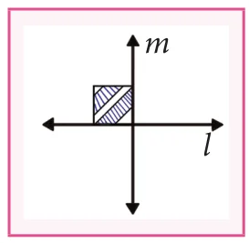
Solution
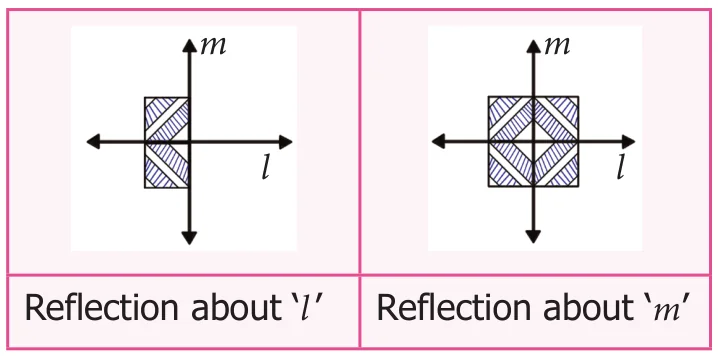
Activity
Symmetrical figures by ink blots
Step 1: Take a sheet of paper and fold it into half to make the crease.
Step 2: Put some ink blots on one side of the crease of the paper.
Step 3: Fold the paper along the crease and press it.
Step 4: Open the paper, you will find an imprint of the ink blots on the other part also which is symmetrical about the crease.
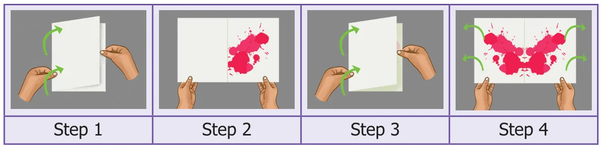
Try these
Find the password:
"Kannukkiniyal has a new game app in her laptop protected with a password. She has decided to challenge her friends with this paragraph which contains that password".
If you follow the steps given below, you will find it.
Steps:
- Write the above paragraph in capital letters.
- Turn that paper upside down and look at it in the mirror.
- The word which remains unchanged in the mirror is the password.
Form words using the letters B, C, D, E, H, I, K, O and X. Write those words in paper in capital letters. Turn it upside down and look at them in the mirror.
- List the letters which have horizontal and vertical line of symmetry.
- Do the words HIKE, DICE, COOK remain unchanged in the mirror?
- The words which you have found that remain unchanged in the mirror are \(\underline{\qquad}, \underline{\qquad}, \underline{\qquad}, \dots\)